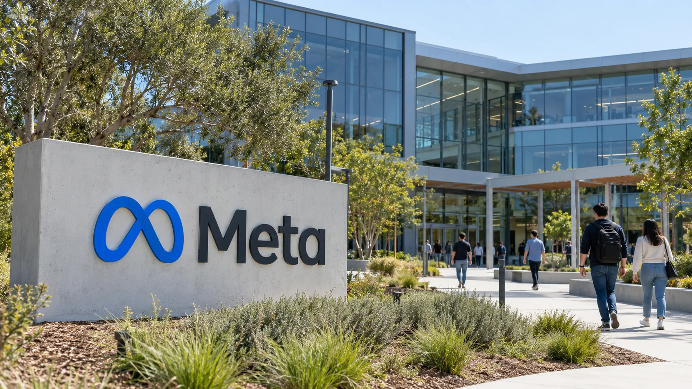

Meta's AI Spending Puts Its AA- Credit Outlook Under Pressure
Meta is generating strong advertising revenue, but the scale of its artificial intelligence investment has put free cash flow and leverage under closer scrutiny.

Meta Platforms faces a fresh financial test after S&P Global Ratings changed the outlook on its AA- issuer credit rating from stable to negative on October 30. The agency did not downgrade the rating itself. Instead, it signaled concern that Meta's extraordinary investment in artificial intelligence infrastructure could strain the cash generation and leverage measures underpinning its high-grade credit profile.
That distinction matters for investors. A negative outlook is a warning about potential future credit deterioration, not a statement that a downgrade has already taken place. S&P's assessment reflects uncertainty about how rapidly Meta's capital expenditure might grow and how soon AI investment could translate into meaningful additional operating cash flow. Reuters reported the outlook revision after the company disclosed unusually heavy quarterly spending.
Strong advertising earnings meet an expensive investment cycle
Meta continues to run a large advertising business across Facebook, Instagram and its other applications. Its third-quarter revenue reached $64.60 billion, up 26% from a year earlier, according to results cited in the company's financial disclosures. Advertising volumes and average prices rose, giving management a substantial established source of funds for AI research and infrastructure.
Yet revenue growth alone cannot measure the amount of cash left after new investment. Meta recorded $32.79 billion in operating cash flow during the quarter, while capital expenditures including finance-lease principal payments reached $34.91 billion. The resulting free cash flow was negative $2.12 billion. For a company accustomed to generating substantial cash, the shift illustrates the intensity of its infrastructure expansion.
The company projected full-year 2026 capital expenditure of $135 billion to $145 billion. This commitment spans advanced processors, data centers, networking equipment and facilities intended to train and run increasingly capable AI systems. Some of those investments can support improvements to Meta's core advertising operation. Others are intended to position the business for products whose future revenue models remain less certain.
Why credit analysts are becoming more cautious
The agency's concern is not that Meta has suddenly lost its ability to operate a profitable business. Its focus is the financial structure required to sustain the next several years of spending. When capital expenditure exceeds operating cash generation, a company must draw down cash reserves, adjust other uses of cash, raise equity, borrow or combine several of those approaches.
S&P indicated that leverage could exceed a threshold relevant to maintaining the current rating, while predicting continued pressure on free operating cash flow. Such forecasts are assessments rather than outcomes that have already occurred. They depend on assumptions about investment timing, operating performance and how successfully new AI products are monetized.
Meta ended the quarter with substantial cash, cash equivalents and marketable securities. That liquidity matters: it helps the company withstand volatility without immediately cutting projects or seeking emergency financing. But large cash balances do not eliminate the longer-term importance of generating sufficient returns on infrastructure investment.
Different economics across the AI industry
Technology companies do not all capture the benefits of AI spending in the same way. A cloud provider can earn revenue by selling computing capacity directly to enterprise clients. A digital advertising platform might realize benefits more indirectly through improved recommendations, more effective advertising tools or deeper user engagement.
For Meta, a better-performing recommendation system may improve revenue without creating a separate product line named artificial intelligence. That creates a measurement challenge: some improvements can be observed in advertising results, while other benefits are hard to isolate from pricing, customer demand and changes in the competitive market.
Large-scale computing infrastructure also has a particular investment profile. Construction and equipment costs arrive early. Hardware can depreciate or become less competitive as successive generations are released, while useful operating capacity may take time to deploy. Investors therefore need to distinguish the amount of computing equipment bought from the incremental revenue and cash flow ultimately generated by that equipment.
What the outlook revision means for shareholders
Bondholders tend to place greater weight on liquidity, leverage and the reliability of debt repayment. Shareholders may accept several years of lower free cash flow if they expect substantial future gains. Both perspectives can be legitimate, but the credit outlook illustrates that the two groups may evaluate the same AI investment plan differently.
A high credit rating is valuable in part because it can support flexibility when financial conditions tighten. If an issuer must rely on more borrowing while retaining uncertain investment returns, investors may demand additional compensation for the associated risk. The actual cost depends on market conditions, debt maturity and the issuer's broader financial position.
The revision should not be confused with a prediction of financial distress. Meta remains a major technology company with a highly profitable advertising franchise. The relevant issue is whether spending levels and future financing needs are consistent with the standards expected of a company rated AA-.
The next figures to watch
Investors should examine quarterly operating cash flow, capital spending, cash reserves, the balance of borrowings and management guidance. Changes to infrastructure timelines will also matter. A lower spending trajectory could relieve pressure if it occurs without materially undermining the company's technological objectives. Conversely, continued acceleration would raise the importance of clearly demonstrating returns.
Meta's existing advertising performance remains a source of resilience. Nevertheless, stronger sales cannot automatically offset investment commitments that grow even faster. The challenge for management is to show that the AI infrastructure being built now can ultimately generate cash returns sufficient to sustain the balance sheet and justify the capital deployed.
S&P's negative outlook puts that question at the center of Meta's next stage of expansion. It is neither a downgrade nor a verdict that AI investment will fail. It is a reminder that even very large technology companies must finance ambitious growth within the practical limits of cash generation and debt capacity.
For broader context on capital-intensive technology businesses, see TTN Finance's analysis of AI spending pressure on Intel and Amazon.